* Khởi động ứng dụng Zoom trên điện thoại.
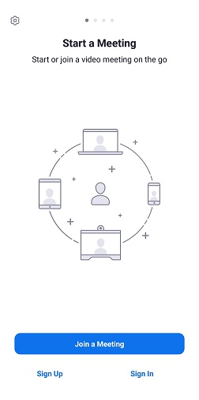Hình 1: Giao diện ứng dụng Zoom
Ở đây chúng ta có 2 lựa chọn chính:
Join a Meeting: Tham gia lớp học mà không cần đăng nhập.
Sign In: Bắt buộc phải đăng nhập thì mới tham gia được lớp học.
Chúng ta có thể làm theo 1 trong 2 cách trên,để đơn giản chúng tôi khuyến khích phụ huynh và học sinh sử dụng cách 1.
Sau khi chọn Join a Meeting chúng ta sẽ thấy giao diện như sau
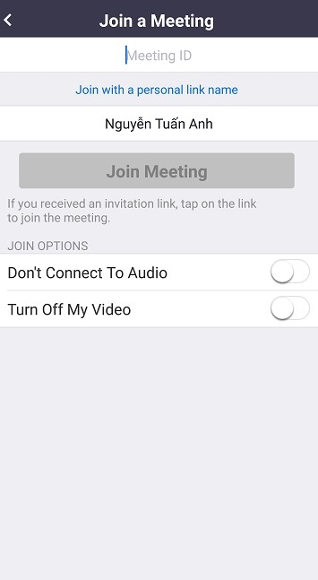Hình 2: Giao diện Join a Meeting
Trong đó:
1: ID hoặc Link do giáo viên cung cấp (Bắt buộc).
2: Họ tên học sinh tham gia lớp học (Bắt buộc).
3: Tích vào các ô trống như trong Hình 3 (Bắt buộc).
Bước 1: Điền ID,tên học sinh và tích vào các ô trống như hình trên,sau đó bấm Join Meeting.
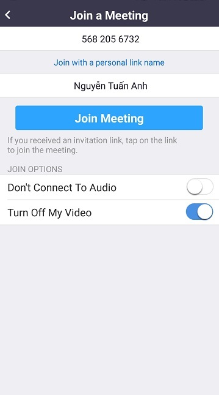Hình 3: Click Join Meeting
Bước 2: Sau khi click "Join Meeting" sẽ xuất hiện giao diện như sau,phụ huynh/học sinh điền mật khẩu được giáo viên cung cấp sau đó ấn OK.
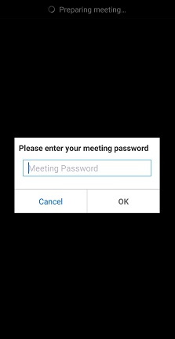Hình 4: Điền mật khẩu sau đó bấm OK
Sau khi ấn OK sẽ mất 1 chút thời gian để hệ thống kết nối tới giáo viên.Thời gian nhanh hay chậm phụ thuộc vào tốc độ mạng của học sinh.
Hình 5: Connecting....
Sau đó hệ thống sẽ xuất hiện giao diện như sau.Đây là giao diện học sinh đang đợi giáo viên cho phép vào lớp.
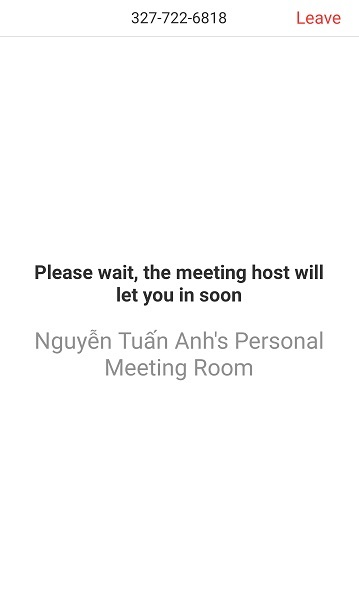Hình 6: Học sinh đợi giáo viên cho phép vào lớp
Sau khi được giáo viên chấp nhận tham gia lớp học,hệ thống sẽ tự động kết nối đưa học sinh tham gia lớp học.Thời gian nhanh hay chậm phụ thuộc vào tốc độ mạng của học sinh.Hình 7 là giao diện sau khi học sinh được tham gia lớp học.
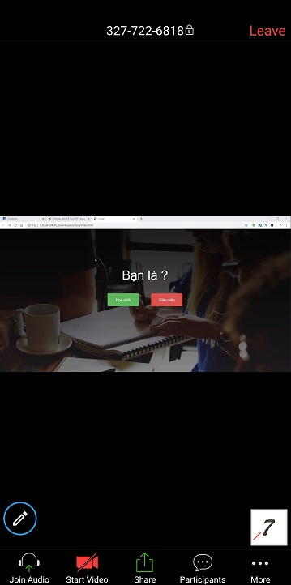Hình 7: Kết nối với lớp học thành công
Chú ý tới phần âm thanh,nếu chưa bật âm thanh hãy tiến hành bật âm thanh bằng cách click chọn Join Audio sau đó tiếp tục chọn Call via Device Audio như Hình 8.
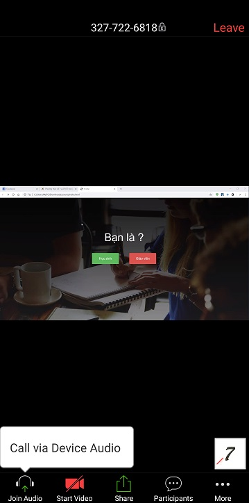Hình 8: Bật âm thanh
Bước 3: Kiểm tra mic và camera.Phụ huynh/học sinh cần đảm bảo mic và camera đã được tắt như hình.
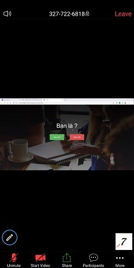Hình 9: Đảm bảo mic và camera đã tắt
Trường hợp 1: Học sinh muốn mở mic để phát biểu.
Bấm vào biểu tượng mic như Hình 10 để bật mic phát biểu.
Hình 10: Bật mic
Sau khi mở mic,biểu tượng gạch chéo mic chéo sẽ chuyển thành mic không bị gạch chéo.
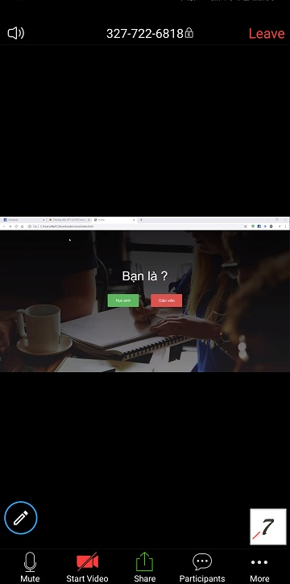Hình 11: Đã bật mic
Trường hợp 2: Học sinh muốn giơ tay phát biểu phát biểu.
Bấm vào More sau đó chọn Raise Hand để giơ tay phát biểu.Giáo viên sẽ nhận biết được học sinh nào đang giơ tay để gọi phát biểu.
Hình 12: Giơ tay phát biểu
Giao diện khi học sinh giơ tay sẽ xuất hiện 1 bàn tay
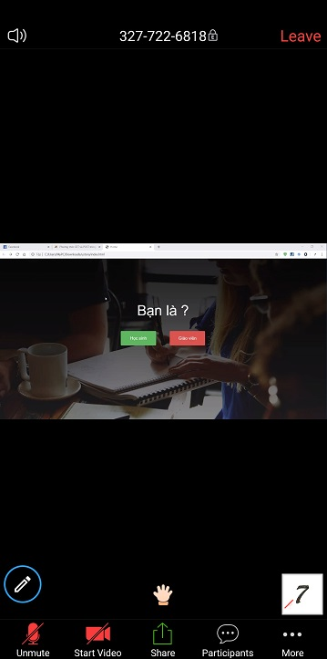Hình 13: Giao diện giơ tay phát biểu
Để bỏ tay xuống học sinh chọn More sau đó tiếp tục chọn Lower Hand như Hình 14
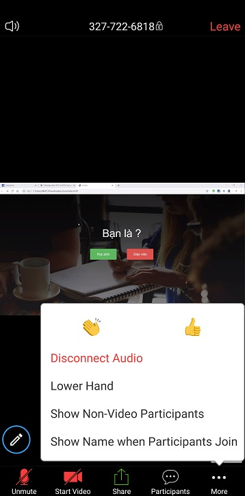Hình 14: Bỏ tay xuống
Sau khi bỏ tay xuống giao diện sẽ như Hình 15,học sinh cần chú ý đảm bảo mic và camera đã tắt.
Hình 15: Giao diện sau khi bỏ tay xuống
Trường hợp 3: Giáo viên yêu cầu học sinh mở mic phát biểu.
Khi được yêu cầu phát biểu,học sinh có thể tự mở mic để phát biểu như Trường hợp 1 hoặc giáo viên sẽ trực tiếp mở mic của học sinh lên để học sinh phát biểu.Học sinh thấy xuất hiện thông báo như Hình 16 thì bấm chọn Unmute myself để mở mic.Sau khi phát biểu xong,học sinh chủ động tắt mic nếu như giáo viên không tắt mic của học sinh.
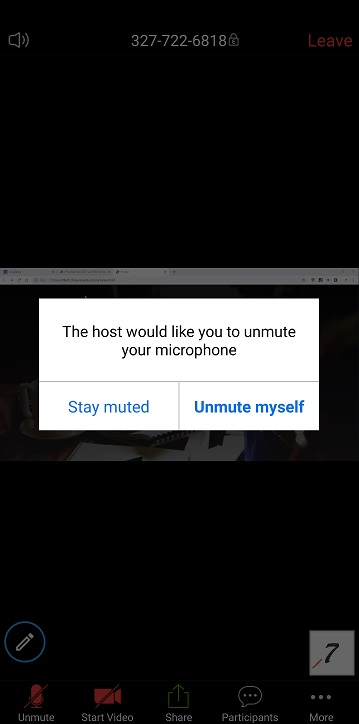Hình 16: Giáo viên yêu cầu học sinh bật mic
Trường hợp 4: Học sinh bị out khỏi lớp học.
Trường hợp học sinh bị out khỏi lớp là do một trong số các lí do sau:
1: Do mạng của học sinh quá kém dẫn tới không thể kết nối tới lớp học.
2: Do hết 40 phút (Cứ sau mỗi 40 phút kể từ khi lớp học bắt đầu,Zoom sẽ tự động kết thúc đối với tất cả học sinh và giáo viên).Học sinh cần nhập lại ID và mật khẩu để tham gia lại lớp học.
3: Do học sinh bị giáo viên đuổi khỏi lớp học.
4: Do giáo viên đã kết thúc lớp học.
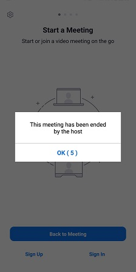Hình 17: Kết thúc